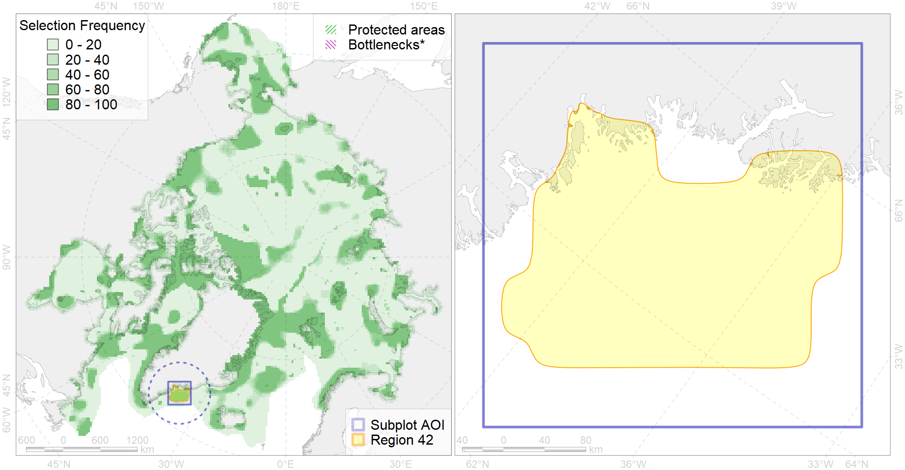

Region 42
Region 42
“ArcNet” scenario 33 achievement for region 42.
Use Accenter for advanced mode.

1
CFs inside of Region completely
3
CFs inside of Region at quarter
5
Complete-targets achievement by Region
9
Half-targets achievement by Region
| CF | Name | Target Achievement for Region | Proportion of Target Achievement in Region | Amount Proportion in Region |
|---|---|---|---|---|
| 7264 | 7264 I I I 6 1 3 | 142.9% | 100.0% | 100.0% |
| 6052 | Common eider (Somateria mollissima borealis) East Greenland breeding&moulting grounds | 43.3% | 43.0% | 34.8% |
| 7162 | III.6.1.2. SE Greenland glacial troughs | 211.5% | 61.4% | 28.7% |
| 7160 | III.6.1. Southeast Greenland shelf | 200.9% | 49.5% | 23.8% |
| 5098 | White-beaked dolphin feeding area in the Central North Atlantic | 156.2% | 51.5% | 19.4% |
| 7161 | III.6.1.1. SE Greenland medium and low profile shelf | 119.6% | 32.7% | 16.1% |
| 5048 | Fin whale summer feeding areas in the East Greenland and West Iceland | 54.6% | 54.4% | 15.7% |
| 3025 | Marginal Ice Zone distribution in April in the Greenland Sea LME | 27.3% | 26.2% | 11.2% |
| 7163 | III.6.2. Southwest Greenland slope | 56.0% | 24.2% | 7.6% |
| 2028 | Hooded seal molting areas | 11.8% | 11.4% | 5.6% |
| 4028 | Feeding/migration area of the Atlantic salmon (Salmo salar) American populations (F27) | 35.0% | 11.2% | 4.7% |
| 4085 | Fish zoogeography, Arctic Region, Subarctic Transitional-Atlantic Province, Labrador – S Greenland District | 48.1% | 10.1% | 4.7% |
| 2047 | Ringed seal whelping areas in Greenland region | 24.7% | 4.8% | 3.9% |
| 5059 | Humpback whale summer feeding areas in the Eastern Greenland and Iceland | 26.9% | 9.0% | 3.8% |
| 7171 | VII.1. Greenland Sea and Fram Strait Basin basins VII.1.1. Rises (slope foot) | 22.0% | 18.3% | 3.4% |
| 1004 | Atlantic Walrus Summer Distribution in East Greenland | 7.5% | 3.7% | 3.1% |
| 6076 | Common murre (Uria aalge aalge) wintering grounds | 14.6% | 7.8% | 3.0% |
| 8040 | Greenland glacial termini | 1.8% | 1.4% | 3.0% |
| 4049 | Range of the Haddock (Melanogrammus aeglefinus) (F 42) | 41.6% | 6.6% | 2.8% |
| 6002 | Little Auk (Alle alle alle) winetring grounds | 10.5% | 7.3% | 2.7% |
| 6034 | Ivory gull (Pagophila eburnea) Atlantic wintering grounds | 9.7% | 4.9% | 2.5% |
| 5101 | Bottlenose whale summer feeding areas in the Northeast Atlantic | 19.7% | 15.8% | 2.5% |
| 5072 | Narwhal East Greenland stock summer distribution | 4.0% | 2.5% | 2.2% |
| 9024 | polar bear denning areas of EG (East Greenland) subpopulation | 1.6% | 1.5% | 2.2% |
| 4056 | Distribution of the American Plaice (Hippoglossoides platessoides) (F 47), European populations | 58.5% | 3.7% | 2.1% |
| 4032 | Range of the Arctic skate (Amblyraja hyperborea) (F2) | 58.6% | 4.5% | 2.0% |
| 3036 | Marginal Ice Zone distribution in July in the Greenland Sea LME | 6.0% | 2.3% | 1.9% |
| 7240 | Kelp forests of southern Greenland | 1.4% | 0.8% | 1.8% |
| 4055 | Range of the Shorthorn Sculpin (Myoxocephalus scorpius) (F 46), American populations | 49.3% | 2.8% | 1.7% |
| 6023 | Atlantic puffin (Fratercula arctica naumanni) wintering grounds | 5.9% | 4.8% | 1.5% |
| 4046 | Range of the Thorny Skate (Amblyraja radiata) (F 3) | 17.9% | 3.3% | 1.5% |
| 4059 | Range of the Greenland Halibut (Reinhardtius hippoglossoides) (F 49) | 39.2% | 3.3% | 1.3% |
| 4045 | Feeding/migration area of the Pink Salmon (Oncorhynchus gorbuscha), native distribution (F23) | 19.3% | 3.1% | 1.3% |
| 6083 | Thick-billed murre (Uria lomvia lomvia) wintering grounds | 4.4% | 3.1% | 1.2% |
| 6015 | Black guillemot (Cepphus grylle mandti) breeding grounds | 5.5% | 1.2% | 1.1% |
| 9006 | polar bear of the EG (East Greenland) subpopulation distribution | 2.8% | 1.4% | 1.1% |
| 4017 | Feeding/ migration area of the Greenland Shark (Somniosus microcephalus) (F1) | 4.5% | 2.6% | 1.1% |
| 6049 | Black-legged kittiwake (Rissa tridactyla tridactyla) wintering grounds | 2.9% | 2.9% | 1.0% |
| 4003 | Range of the Atlantic Capelin (Mallotus villosus) (F10) | 27.1% | 2.3% | 0.9% |
| 4048 | Feeding/nursery area of the ogac (Gadus ogac ) (F 41) | 6.0% | 1.5% | 0.9% |
| 5112 | Arctic Cetaceans (beluga, bowhead, narwhal) winter habitats as predicterd by MIZ | 1.4% | 1.2% | 0.7% |
| 4037 | Distribution of the Glacial cod (Arctogadus glacialis) (F34) | 3.2% | 0.8% | 0.4% |
| 6029 | Glaucous gull (Larus hyperboreus euceretes) breeding grounds | 0.4% | 0.1% | 0.4% |
| 4041 | Range of the Polar Cod (Boreogadus saida) (F35) | 2.3% | 0.9% | 0.3% |
| 3007 | Fast Ice distribution in the East Greenland region | 0.8% | 0.1% | 0.1% |